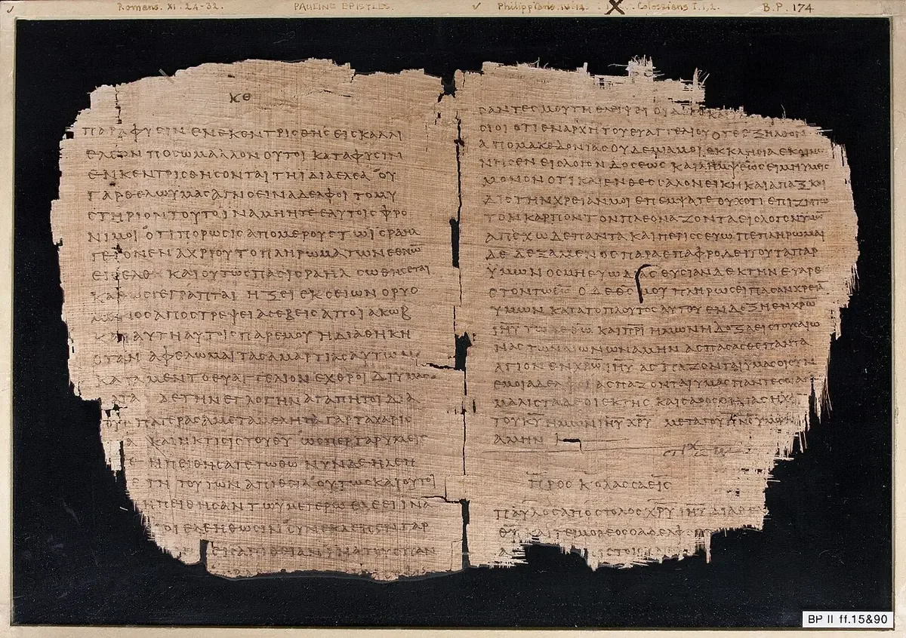
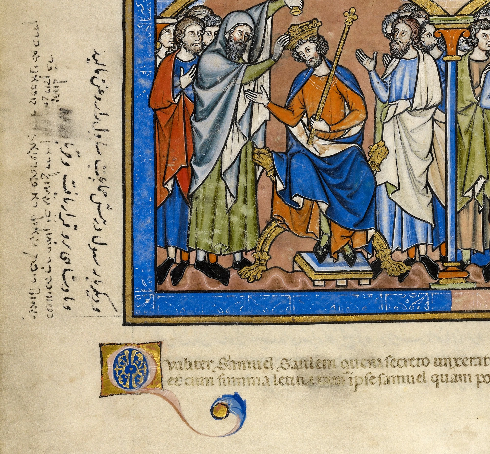

아직 펼치지 않은 카드성경이라는 책을 읽는 책 · 2래리 스톤 『성경 번역의 역사』쿰란 동굴의 이사야 두루마리를 실제 크기로 넘겨 볼 수 있다면 어떤 느낌일까요?옛날 성경 조각을 진짜 크기로 볼 수 있는 책이 있대!
1250년 무렵 ~ 1916년파리 · 이탈리아 · 크라쿠프 · 이스파한 · 카이로 · 런던 · 뉴욕
래리 스톤 『성경 번역의 역사』
1608년 1월, 페르시아의 이스파한. 왕 샤 아바스가 폴란드에서 온 그림 성경을 받고, 그림마다 페르시아어 설명을 적게 했어요. 래리 스톤의 책에 실린 이 그림 성경이 파리에서 뉴욕까지 걸어온 길을 따라가 보세요.
아주 옛날 프랑스에서 그림으로만 된 성경을 만들었대. 이 책이 여러 나라를 돌아다니며 글씨를 얻었어. 함께 따라가 볼까?
검수 전 시안이에요(기준서 1판). 이 책이 지나온 길과 덧붙은 글씨는 모건 도서관의 기록에 있는 것만 옮겼고, 기록마다 다른 것은 ‘기록마다 다른 점’에 적었어요. 지도는 이 안내서가 그린 길잡이 그림이에요. 사본 쪽은 위쪽의 전투 장면을 빼고 아래 왼쪽만 잘라 보여 드려요. 상상은 ‘눈 감고 상상해 보기’에만 썼어요.
시안 확인용카드 단계 미리 보기
1
한 쪽에 세 가지 글씨
래리 스톤의 책에는 옛 성경 사본을 실제 크기로 찍은 쪽들이 들어 있어요. 중세를 다룬 장에 실린 한 장이 1250년 무렵 파리에서 만든 그림 성경, ‘모건 십자군 성경’이에요.
이 성경은 처음에 글 없이 그림만 있었어요. 그런데 지금은 한 쪽에 세 가지 글씨가 있어요. 그림 아래의 라틴어, 왼쪽 여백의 페르시아어, 그리고 맨 왼쪽에 히브리 글자로 적은 페르시아어(유대-페르시아어)예요.

세 글씨는 모두 같은 장면, 사무엘이 사울에게 기름을 부어 왕으로 세우는 장면을 설명해요(사무엘상 11장). 그런데 적은 때도, 적은 사람도 모두 달라요.
글씨 하나하나가 이 책을 거쳐 간 주인들의 발자국이에요. 이 발자국을 따라가면 책이 걸어온 길이 보여요.
이 그림에는 글씨가 세 가지나 있어. 다 다른 사람이 썼대.
물어보기왜 한 쪽에 여러 나라 글씨가 있을까?
2
그림 성경이 걸어온 길
모건 도서관은 이 책이 프랑스에서 이탈리아, 폴란드, 페르시아, 이집트, 잉글랜드를 거쳐 뉴욕까지 왔다고 정리해요.
‘다음 곳으로’를 눌러 따라가 보세요. 곳마다 그때 덧붙은 글씨와 주인 이야기가 열려요.
‘다음 곳으로’를 눌러 그림 성경이 걸어온 길을 따라가 보세요.
파리이탈리아크라쿠프이스파한카이로런던뉴욕
지도는 이 안내서가 그린 길잡이 그림이에요(실제 거리와 다를 수 있어요).
파리에서 뉴욕까지, 660여 년의 길이에요. 그 길에서 글 없던 그림 성경이 세 가지 글씨를 얻었어요.
지금 이 책의 낱장 마흔세 장은 뉴욕 모건 도서관에, 두 장은 파리 프랑스 국립도서관에, 한 장은 로스앤젤레스 게티 미술관에 있어요.
이 책이 비행기도 없던 때에 멀고 먼 길을 다녔대. 따라가 보자!
물어보기이 책이 다녀간 곳 가운데 어디가 제일 멀까?
눈 감고 상상해 보기
1608년 1월, 이스파한의 겨울 궁정. 먼 길을 온 사절단이 상자를 열어요. 금빛이 반짝이는 그림 속에는 쇠사슬 갑옷의 기사들과 성과 왕들이 가득해요. 왕이 그림 하나를 가리키며 물어요. 이 사람은 누구인가? 선교사가 이야기를 들려주고, 그 말이 여백에 새 글씨로 내려앉아요.
눈을 감아 봐. 커다란 궁전에 먼 나라 손님들이 상자를 들고 왔어. 상자를 열자 반짝반짝 그림책이 나와. 왕이 묻지. “이 사람은 누구야?”
나의 자리
아주 오래된 것을 손에 쥐어 본 적이 있나요? 그때 무엇이 느껴졌나요?
제일 오래된 물건을 만져 본 적 있어? 뭐였어?
마음에 닿는 한 줄을 고르거나 직접 써 보세요. 한 줄을 남기면 이 자리의 도장이 찍혀요. 이 기기에만 저장돼요.
더 깊이
궁금한 칸만 펼쳐 읽어도 괜찮아요.
알고 보면
그림 성경 글 대신 그림으로 성경 이야기를 따라가게 만든 책이에요. 이 책도 처음에는 글이 한 줄도 없었어요.
마치에요프스키 추기경 폴란드 크라쿠프의 추기경이에요. 책이 샤 아바스에게 전해지고 16일 뒤, 고맙다는 답장을 받지 못한 채 세상을 떠났어요.
교황의 사절단 교황 클레멘스 8세는 샤 아바스에게 그리스도인을 너그럽게 대해 달라고, 또 오스만 튀르크에 맞서 함께해 달라고 청하려고 사절단을 보냈어요. 사절단은 1607년 12월 2일 이스파한에 닿았어요.
유대-페르시아어 페르시아어를 히브리 글자로 적은 글이에요. 모건 도서관은 이 책에서 유대-페르시아어 설명만이 입다 이야기를 바르게 짚었다고 적었어요.
벨 다 코스타 그린 모건 도서관의 사서였어요. 1916년 11월 21일, 모건의 허락을 받기 전에 이 책을 샀어요.
래리 스톤의 책과 함께
래리 스톤의 『성경 번역의 역사』(원서 2010)는 쿰란 두루마리부터 오늘의 번역까지, 성경이 전해진 길을 시대 차례로 따라가요. 원서에는 실제 크기로 뽑아 볼 수 있는 사본 쪽이 스물세 장 들어 있어요.
중세를 다룬 장에는 켈스의 서, 린디스판 복음서, 모건 십자군 성경, 윈체스터 성경, 위클리프 신약의 쪽이 들어 있어요. 앞 장에는 아미아티누스 사본의 쪽도 있어요(덴버 신학교 서평).
우리말판(포이에마, 2011, 홍병룡 옮김)은 사본 열다섯 가지를 실제 크기로 실었고, 고신대 이상규 교수가 쓴 ‘한글 성경 번역의 역사’를 부록으로 더했어요. 출판사 소개는 이 성경을 ‘모르간 크루세이더 성경’이라 적었어요.
서평을 쓴 신약학자 윌리엄 클라인은 이 책을 정성으로 만든 책이라 하면서도, 믿음의 눈으로 성경의 역사를 바라보는 책이라는 점을 함께 짚었어요.
기록마다 다른 점
누구의 책이었나 모건 도서관은 이 책이 ‘오래 루이 9세의 궁정과 이어져 생각되어 왔다’고 적고, 이 책이 걸어온 길을 설명할 때도 ‘루이 9세가 이 책을 가졌다면’이라고 조심스럽게 써요.
페르시아를 떠난 때 모건 도서관의 한 설명은 1722년 아프간 군대가 이스파한을 차지한 뒤 책이 유대인의 손에 들어갔다고 적고, 다른 설명은 왕실 도서관이 털린 때를 ‘아마 그때’라고 적어요.
이름 모건 성경, 십자군 성경으로 불리고, 모건 도서관 기록에는 ‘성 루이 성경’이라는 이름도 있어요. 위키미디어 공용은 ‘마치에요프스키 성경’으로 묶어 두었어요.
책이 걸어온 길 금박
파리에서 뉴욕까지 일곱 곳을 끝까지 따라가면 카드에 금박이 입혀져요.
파리에서 뉴욕까지 일곱 곳을 따라가기
아이와 함께 끝까지 채색
아이와 함께 영화처럼 보기를 끝까지 보면 카드가 채색돼요.
아이와 함께 ‘영화처럼 보기’를 끝까지 보기
근거 보기 (8)
- 모건 도서관, MS M.638 기록 — 파리 1244~1254년 무렵, 43장(파리 2장·게티 1장), 마치에요프스키, 1608년 1월 3일, 1833년 경매·필립스, 1916년, 390×300mm, ‘성 루이 성경’
- 모건 도서관, 십자군 성경이 걸어온 길 — 클레멘스 8세의 사절단, 1607년 12월 2일 도착, 16일 뒤 추기경의 죽음, 선교사의 설명·도장, 카이로의 다타나시, 1916년 11월 21일 그린
- 모건 도서관, 십자군 성경의 글씨들 — 14세기 이탈리아 라틴어(열네 장면 잘못), 1608년 이스파한 페르시아어, 1722년 뒤 유대-페르시아어(입다)
- 모건 도서관, 23장 뒷면 — 라틴어·페르시아어·유대-페르시아어 설명의 영어 번역(사무엘상 11장)
- 모건 도서관 전시(2014~2015) — 파리 1250년 무렵, 루이 9세의 궁정, 처음엔 글이 없음, 프랑스·이탈리아·폴란드·페르시아·이집트·잉글랜드·뉴욕
- 모건 도서관, 십자군 성경 소개 — 13세기 프랑스의 성과 기사, 주인이 바뀔 때마다 덧붙은 글씨
- 윌리엄 클라인, Denver Journal 서평(2010) — 실물 크기 복제 쪽 23장, 5장에 모건 십자군 성경, 4장에 아미아티누스, 시대 차례
- 예스24: 성경 번역의 역사(포이에마, 2011.7.20, 264쪽, 홍병룡 옮김) — 사본 15가지 실제 크기 부록, 한글 성경 번역의 역사(이상규), ‘모르간 크루세이더 성경’
그림·사진·소리 출처
‘처음 만나는 기독교 문화’의 깊은 카드예요. 카드 단계와 남긴 글은 이 기기에만 저장돼요.